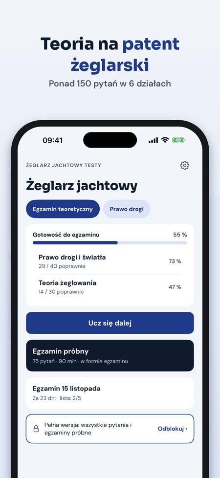
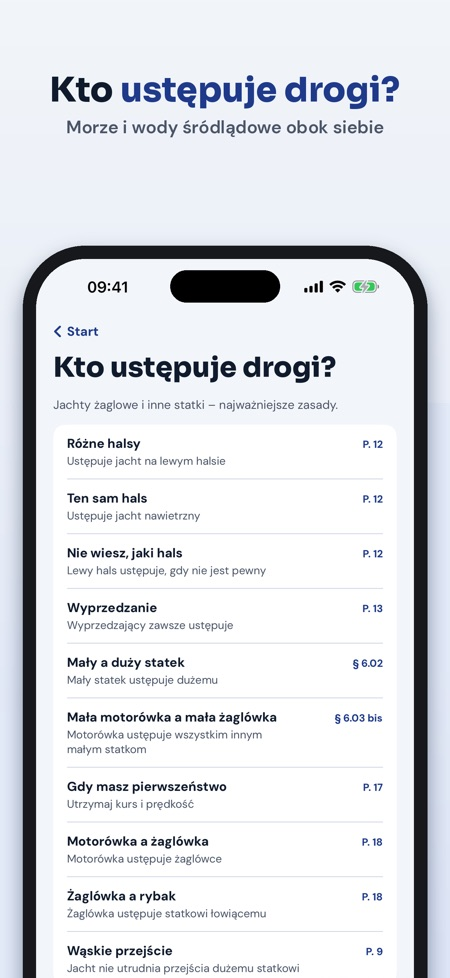
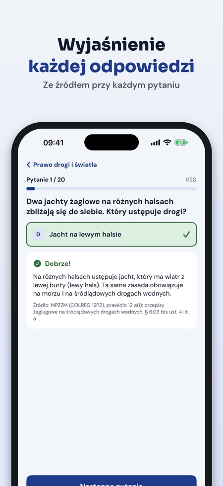

Żeglarz Jachtowy Testy pomaga przygotować się do egzaminu teoretycznego na patent żeglarza jachtowego i sternika motorowodnego. Przy każdej odpowiedzi znajdziesz wyjaśnienie i źródło.



Na patent żeglarza jachtowego, a od wersji 1.1 także na patent sternika motorowodnego. Patent wybierasz na starcie i możesz go zmienić w Ustawieniach.
Po 151 pytań na każdy patent. W dziale „Jacht motorowy i silnik” dla sternika jest 58 nowych pytań.
To test w formie egzaminu: 75 pytań, 90 minut, próg 65 poprawnych odpowiedzi, tak samo dla obu patentów.
Możesz rozwiązać 1 pełny egzamin próbny i korzystać z 20 pytań wybranego patentu, słownika, prawa drogi w skrócie i listy rzeczy na egzamin.
Nie. Pełna wersja to jednorazowy zakup, który odblokowuje wszystkie pytania obu patentów, egzaminy próbne bez limitu i powtórkę błędów.
Tak, działa bez internetu i bez konta.
Nie. Jest niezależna i nie jest powiązana z PZŻ ani komisjami egzaminacyjnymi. Egzamin zdajesz przed komisją.
Żeglarz Jachtowy Testy pomaga przygotować się do egzaminu teoretycznego na patent żeglarza jachtowego, a od wersji 1.1 także na patent sternika motorowodnego – z wyjaśnieniem każdej odpowiedzi.
Bez zakupu możesz rozwiązać 1 pełny egzamin próbny i korzystać z 20 pytań wybranego patentu, słownika, prawa drogi w skrócie i listy rzeczy na egzamin. Pełna wersja to jednorazowy zakup, który odblokowuje wszystkie pytania obu patentów, egzaminy próbne bez limitu i powtórkę błędów. Bez subskrypcji.
Pytania napisaliśmy sami na podstawie zakresu wymagań egzaminacyjnych z rozporządzenia w sprawie uprawiania turystyki wodnej. Żeglarz Jachtowy Testy jest niezależna i nie jest powiązana z PZŻ ani komisjami egzaminacyjnymi. Egzamin zdajesz przed komisją.